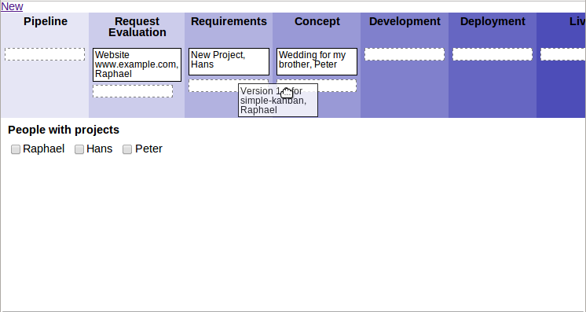
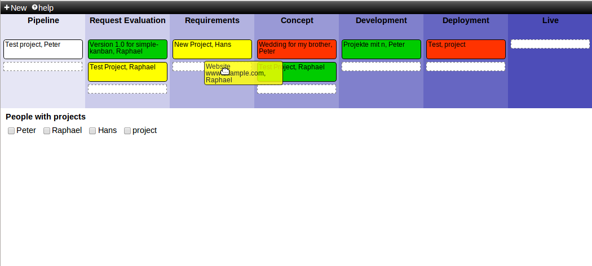

Introduction
This is a very lightweight Project Dashboard (I guess it could also be used for something else. Goal: Easy and fast to edit.
Probably best to checkout the Demo (disabled persistency feature).
Features
- Drag and drop of project between different states
- Inplace editing of projects/tasks
- Flexibility to add custom states
- Highlight Projects by maintainer
- Works also on IE8
Screenshots
This is showing the drag and drop functionality
Highlight projects by person
Installation
Easy. Drop all your files onto a webserver (probably apache), and open index.html in your browser. It's as simple as this. Make sure that data.txt is writable by the webserver. This file servers as some kind of database.